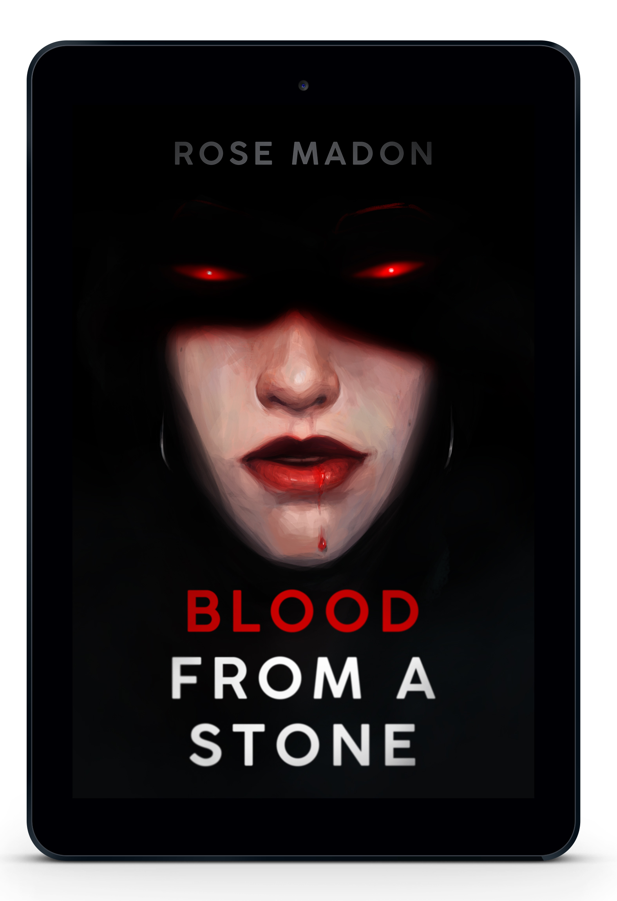

NEW RELEASE!
Blood From A Stone
Lark was framed for a crime she did not commit.
On the run and out of money, she answers an online advertisement to sell her blood to a strange older woman called Thea Sokolova. Everyone knows there’s no such thing as vampires, but nonetheless Thea drinks her blood and offers her an extra incentive: double the payment if they have sex.
But as what started as blood for pay slowly transforms into something unexpectedly tender, Lark’s past is catching up to her… and it turns out Thea may be much, much stranger than she ever realised.
BLOOD FROM A STONE is a lesbian romance novella. It’s weird and heartwarming and a little funny and quite explicitly sexual at times. All sexual content is consensual and is intended for 18+ audiences.
